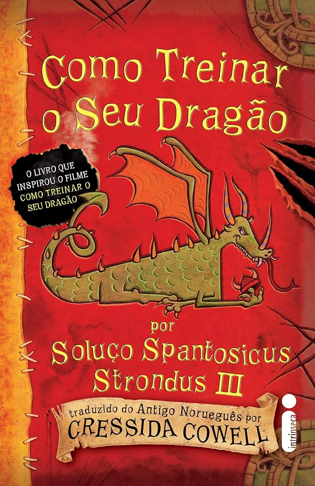

Sobre o Livro
"Como Treinar o Seu Dragão" é o primeiro livro de uma série infanto-juvenil de 12 livros, escrita por Cressida Cowell. Publicado em 2003, ele nos apresenta a história de Soluço Spantosicus Maximus III, um jovem viking que não se encaixa nos padrões de sua tribo e que precisa provar seu valor capturando e treinando um dragão.
A história se passa na ilha de Berk, um lugar onde vikings e dragões são inimigos mortais. Soluço, no entanto, tem uma visão diferente sobre os dragões e acredita que eles podem ser amigos dos humanos. Sua vida muda quando ele encontra um dragão raro e misterioso, o Banguela, com quem ele cria um laço de amizade.
O livro é cheio de humor, aventura e emoção, e aborda temas como amizade, coragem, respeito às diferenças e a importância de seguir o seu coração.
Sobre a Autora
Cressida Cowell é uma escritora britânica de livros infantis, conhecida mundialmente pela série "Como Treinar o Seu Dragão". Nascida em Londres em 1966, Cowell cresceu em uma fazenda e sempre foi apaixonada por histórias de fantasia e criaturas mágicas.
Antes de se dedicar à escrita, Cowell estudou inglês na Universidade de Oxford e trabalhou como jornalista e ilustradora. Seu primeiro livro, "The Adventures of Tooth & Claw", foi publicado em 1993.
A série "Como Treinar o Seu Dragão" foi um sucesso de vendas e crítica, e já vendeu milhões de exemplares em todo o mundo. Os livros foram adaptados para o cinema em uma franquia de filmes de animação de grande sucesso, produzida pela DreamWorks Animation.
Personagens
Soluço Spantosicus Maximus III
Um jovem viking que não se encaixa nos padrões de sua tribo, mas que tem um coração bondoso e uma mente curiosa. Soluço é um herói improvável que aprende a treinar dragões de maneira inesperada e se torna um líder corajoso e respeitado.
Banguela
Um dragão da espécie Fúria da Noite, considerado raro e perigoso. Banguela é inteligente, leal e tem um senso de humor peculiar. Ele se torna o melhor amigo de Soluço e o ajuda a mudar a relação entre vikings e dragões.
Outros personagens
O mundo de "Como Treinar o Seu Dragão" é repleto de personagens cativantes, como Astrid Hofferson, a jovem viking forte e independente, Bocão, o ferreiro da tribo, e Stoico, o Imenso, o pai de Soluço e líder da tribo. Além deles, há uma grande variedade de dragões com diferentes habilidades e personalidades.